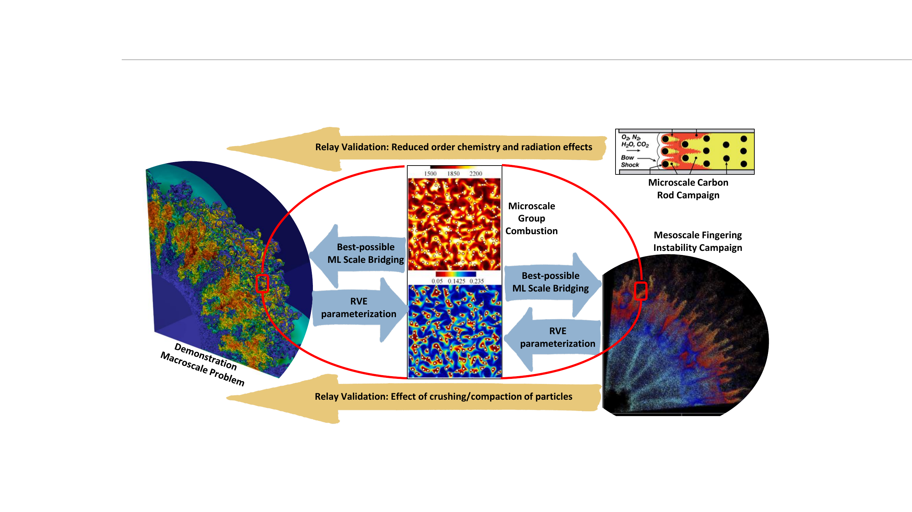
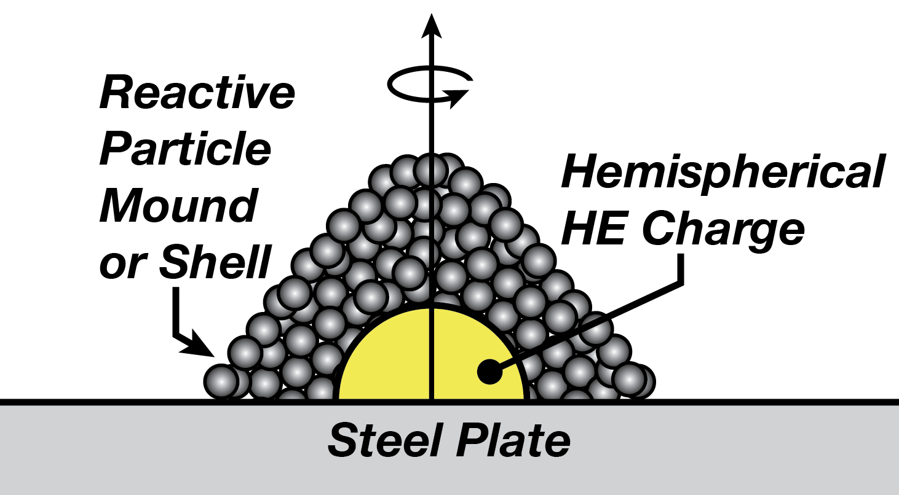
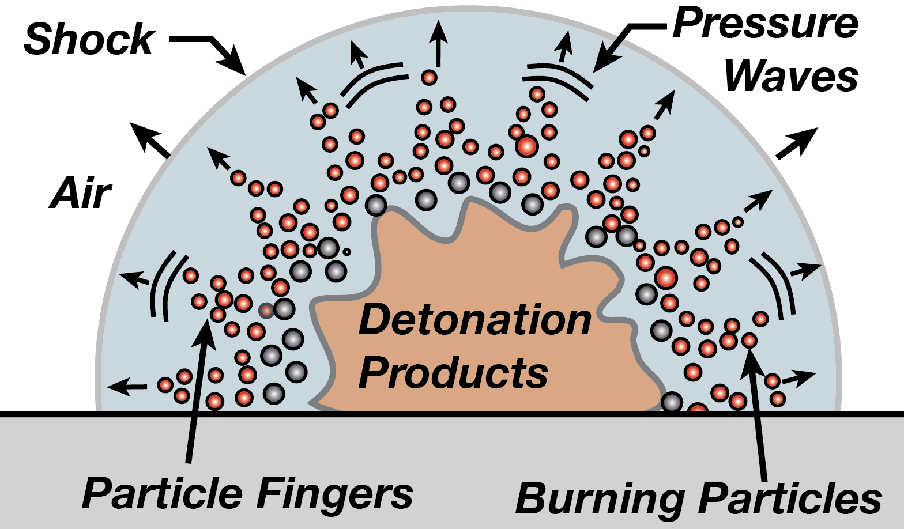
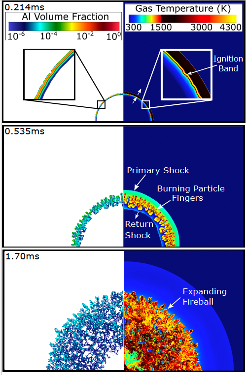
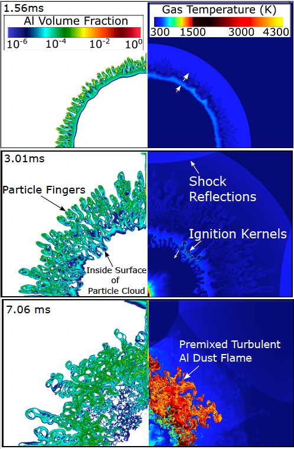
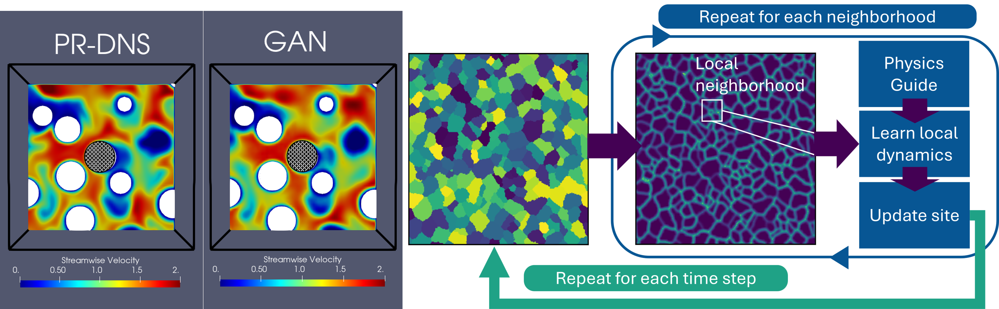
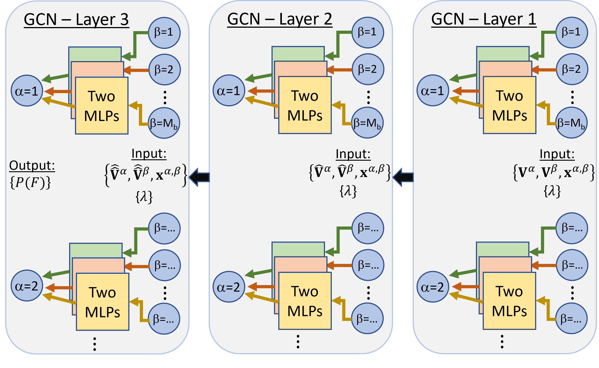
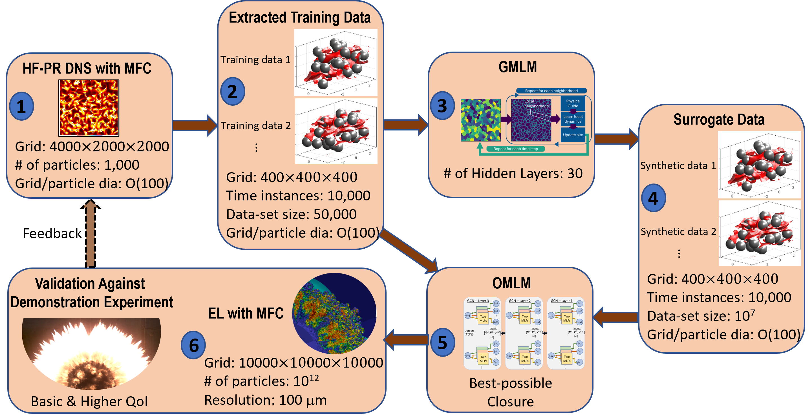

Research
CM3C investigates the phase change and group combustion of dense particle clouds under high-speed and detonation conditions. These flows combine turbulence, multiphase interactions, shock waves, reactive flow, phase change, and stiff chemical kinetics across a wide range of spatial and temporal scales.
The Center combines particle-resolved, Euler-Lagrange, and Euler-Euler simulations with experiments, physics-informed machine learning, verification and validation, uncertainty quantification, and exascale computing to develop predictive models of these complex multiphase systems.
Multiscale Predictive Science

Research Areas
Microscale Group Combustion
Particle-resolved simulations investigate collective combustion, reacting wakes, oxidizer depletion, particle-gas interactions, and particle-particle effects within dense reactive clouds.
Mesoscale Physics
Simulations and experiments investigate instability-driven particle clustering, shock-particle interactions, and the emergence of mesoscale structures that influence combustion and dispersal.
Macroscale Predictive Simulation
Euler-Lagrange and Euler-Euler models incorporate microscale-informed closure models to predict explosive dispersal and combustion of dense particle clouds.
Machine Learning & Scale Bridging
Physics-informed generative and operator-learning models transfer information from high-fidelity simulations into closure models suitable for larger-scale predictive calculations.
Verification, Validation & UQ
Relay validation connects experiments and simulations across scales, while uncertainty quantification identifies important uncertainty sources and guides model improvement.
Exascale Computing
CM3C develops scalable algorithms, GPU-accelerated simulation methods, dynamic load balancing, and workflows for predictive multiphase calculations on exascale systems.
Scientific and Technical Merit
Overarching Vision and Integrated Problem
The group combustion of a cloud of particles in a high-speed environment is a formidable problem, as it combines turbulence, multiphase flow, shock waves, and reactive flow physics. The wide range of scales, phase changes, and stiff chemical reactions make direct numerical simulations (DNS) of combustion of even an isolated particle in a high-speed environment a problem worthy of exascale computation.
The collective burning of a cloud of particles cannot be approached as a superposition of individual burning processes. Particle-gas interactions at the mesoscale through preferential fingering, particle-gas-particle interactions at the microscale in the form of localized oxidizer depletion in reacting wakes, and close-range particle-particle interactions through collisions render the problem far more complex, and multiscale methods are required for efficient use of exascale facilities.
CM3C is developing a hierarchical scale-bridging approach for high-fidelity closure models by providing proper context to the bottom-up approach currently employed in complex multiscale multiphase problems. Instead of building closure models based only on the canonical configuration of an isolated burning particle, coarse-grained models are informed by a complete statistical description of possible group-combustion configurations.
To achieve this goal, CM3C leverages advancements in artificial intelligence by melding scientific computing with machine learning at multiple scales. The Center advances a co-design strategy that combines particle-resolved (PR), Euler-Lagrange (EL), and Euler-Euler (EE) simulations of high-speed combustion of dense particle clouds with physics-informed generative and operator-learning models.
Exascale-enabled Discovery of Complex Physics
The complex nature of group combustion under high-speed and detonation conditions makes controlled experiments with diagnostics challenging. Fully validated coarse-grained exascale simulations provide a pathway toward fundamental advances beyond current empiricism.
Scale-bridging with Physics-informed ML
CM3C is developing a Lagrangian-based multiscale modeling approach aimed at rigorous, best-possible closure models of group combustion. Generative neural-network models provide surrogate data approaching high-fidelity exascale simulation accuracy, while operator-learning networks are used to learn large-parametric closures.
UB-driven Simulation Roadmap
Relay validation quantifies uncertainties in macroscale Euler-Lagrange simulations through companion micro- and mesoscale simulation and experimental campaigns. Uncertainty budgets rank the sources of uncertainty and guide subsequent simulations and experiments for uncertainty reduction and model improvement.
Dynamic Load Balancing for Exascale Performance
Particle-resolved, Euler-Lagrange, and Euler-Euler simulations use the exascale Multicomponent Flow Code (MFC). CM3C is advancing bin-based load balancing and trace-based workload prediction for exascale multiphase simulations.
Demonstration Problem

(a) Initial configuration

(b) Particle dispersal and combustion
The CM3C demonstration problem consists of a high-explosive hemispherical charge surrounded by reactive carbon or magnesium particles. Detonation of the high explosive rapidly shocks, heats, and accelerates the particles. As the particulate front expands radially, it undergoes complex instabilities and reactions. Molten magnesium burns within vapor diffusion flames, while carbon undergoes heterogeneous surface and gas-phase reactions. Carbon and magnesium therefore represent two distinct particle-burning regimes.
Predicting reactive particle-gas and particle-gas-particle interactions across the broad range of scales within the expanding post-detonation flow poses an immense computational challenge. Meeting this challenge is a central goal of CM3C.
Integrated simulations of the demonstration problem are performed using MFC. Increasing computational resources and improved modeling fidelity enable progressively more detailed simulations, while relay validation and propagation of modeling errors and uncertainties quantify uncertainty in the prediction metrics. Uncertainty budgets identify the modeling and numerical weaknesses that contribute most strongly to predictive uncertainty and guide subsequent improvements to machine-learning models and numerical methods.
Predictive Science Plan
CM3C seeks predictive simulation capabilities for phase change and combustion of dense particle clouds in high-speed environments. These flows combine compressible-flow phenomena, rapid thermal transients, reacting particle wakes, turbulence, evolving particle distributions, and heterogeneous and gas-phase chemical reactions over a broad range of spatial and temporal scales. Predictive models must capture not only the behavior of individual burning particles, but also the collective dynamics that emerge within dense particle clouds.
Following detonation, an intense shock propagates through the surrounding particles before emerging as a strong air blast. The particles accelerate outward and disperse while complex shock heating and mixing produce ignition and combustion. Initially large particle-gas relative velocities generate interacting shock structures and strongly nonuniform thermal environments. As particle concentration increases, interactions between neighboring reacting wakes and flame envelopes become increasingly important, ultimately producing collective group-combustion behavior that cannot be represented as a simple superposition of isolated particles.

(a) Prompt ignition

(b) Delayed ignition
CM3C addresses this multiscale problem using particle-resolved simulations to reveal the underlying microscale physics, together with Euler-Lagrange and Euler-Euler descriptions for progressively larger scales. High-fidelity simulations, experiments, and physics-informed machine learning are used together to develop closure models that retain the important effects of particle clustering, reacting wakes, shock interactions, and collective combustion while remaining computationally practical for large-scale predictive calculations.
Verification, Validation & Uncertainty Quantification
Verification, validation, and uncertainty quantification (VVUQ) provide the framework for assessing the predictive capability of CM3C simulations across the micro-, meso-, and macroscales. Rather than relying only on direct validation of the full demonstration problem, CM3C employs relay validation, in which carefully designed experiments and high-fidelity simulations interrogate important physical processes and model components at intermediate scales.
Modeling, numerical, parametric, and experimental uncertainties are propagated through the multiscale framework to construct an uncertainty budget for the macroscale prediction quantities. The uncertainty budget identifies and ranks the dominant sources of predictive uncertainty, providing a quantitative basis for selecting subsequent simulations, experiments, and model improvements. In this way, VVUQ is integrated directly into the Center's research strategy rather than applied only as a final assessment.
Exascale Computing
The enormous range of spatial and temporal scales in reactive particle-cloud flows requires computational capabilities extending from particle-resolved calculations to macroscale simulations containing very large numbers of computational cells and Lagrangian particles. CM3C uses the open-source Multicomponent Flow Code (MFC) as the principal simulation platform for particle-resolved, Euler-Lagrange, and Euler-Euler calculations. MFC provides a common high-performance framework in which new multiphase physics, chemistry, numerical methods, and scale-bridging models developed by CM3C can be integrated.
Efficient use of exascale systems also requires addressing the strongly heterogeneous and time-dependent computational workload created by dispersed particle clouds. CM3C is developing dynamic load-balancing strategies and trace-based particle-workload prediction methods that use inexpensive lower-fidelity simulations to anticipate particle distributions and computational cost. Combined with asynchronous CPU-GPU execution and adaptive domain decomposition, these methods are designed to maintain efficient utilization as particle clouds disperse, cluster, collide, and react.
Artificial Intelligence & Machine Learning
Machine learning provides the central scale-bridging capability in the CM3C multiscale framework. High-fidelity particle-resolved simulations can reveal the detailed physics of group combustion, but only a limited number of these expensive calculations can be performed. Directly constructing closure models from this limited database would therefore explore only a small fraction of the parameter space relevant to dense, reacting particle clouds.
CM3C addresses this limitation with a two-stage machine-learning strategy. Generative machine-learning models (GMLMs) first learn the microscale flow physics from high-fidelity particle-resolved simulations and generate a much larger database of surrogate microscale solutions. Operator-learning machine-learning models (OMLMs) then use both the high-fidelity and surrogate data to learn closure relations for coarse-grained simulations. This approach combines scientific computing and machine learning to transfer information systematically from particle-resolved simulations to predictive Euler-Lagrange models.
Generative ML Models
The GMLM is trained to reproduce the local, time-dependent microscale flow surrounding particles and their neighbors. By formulating the prediction from the perspective of individual particles or local neighborhoods, each high-fidelity simulation provides many training examples. Physics can also be incorporated directly into the learning process by using the governing equations to constrain the model in addition to supervised training data.
Once trained, the generative model can explore particle configurations and physical parameters at a small fraction of the cost of additional particle-resolved simulations. The resulting synthetic flow fields retain detailed microscale information and provide the much larger database needed for subsequent closure learning.

Operator-learning ML Models
The second stage seeks the closure relations required by coarse-grained Euler-Lagrange simulations. Operator-learning models are trained using information from both the original high-fidelity simulations and the much larger GMLM-generated surrogate database. The goal is not to reproduce the complete microscale flow during a macroscale calculation, but to extract compact models for the unresolved particle-gas interactions that influence the resolved dynamics.
Graph-based architectures provide a natural representation of particle interactions: a reference particle and its neighbors form a local interaction network whose geometry, particle states, and flow information determine the required closure quantities. Successive graph-convolution layers communicate information among neighboring particles, allowing the learned closure to represent many-particle effects that cannot be captured by an isolated-particle model.

Integration of Exascale Simulations and ML Models
The complete CM3C scale-bridging strategy integrates exascale scientific computing and machine learning in a single predictive workflow. High-fidelity particle-resolved simulations with MFC first resolve the detailed group-combustion physics for approximately one thousand particles. The resulting flow fields are processed into local, time-resolved training data describing individual particles, their neighborhoods, and the surrounding gas.
These data train the GMLM, which is then deployed to generate orders of magnitude more synthetic microscale data over the parameter space of interest. The combined high-fidelity and surrogate databases are subsequently used to train the OMLM and obtain computationally lightweight, best-possible closure models. These closures are embedded within large-scale Euler-Lagrange simulations performed with MFC, allowing microscale information to influence calculations involving vastly larger particle populations.
The resulting macroscale predictions are compared with demonstration experiments using both basic and higher-order quantities of interest. Validation and uncertainty quantification provide feedback to the high-fidelity simulations, training data, and machine-learning models, closing the loop between microscale discovery, scale bridging, and predictive simulation.

Further Information
A more detailed description of the CM3C scientific and technical program is available in the Center's PSAAP-IV Technical Proposal.